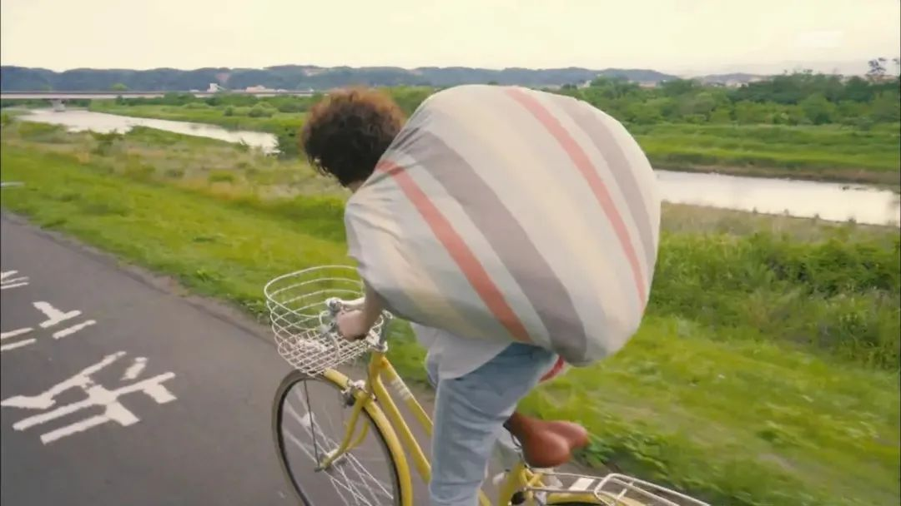
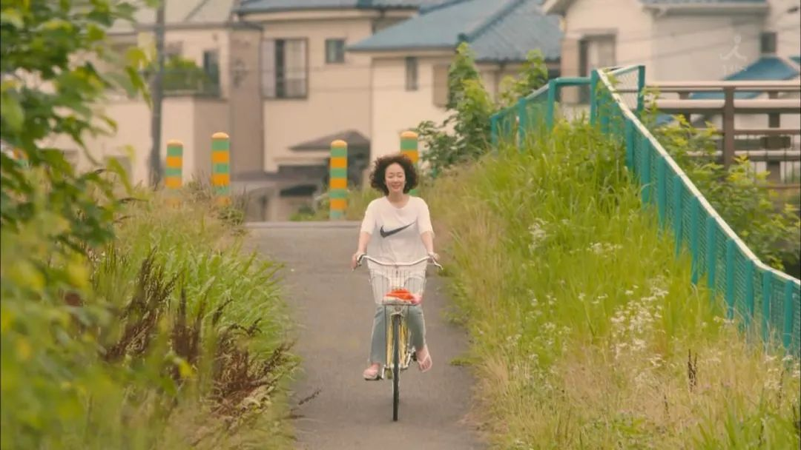
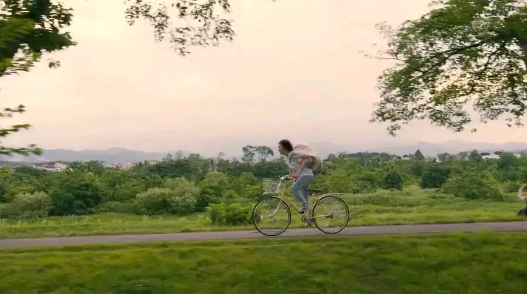

对于人的欲望，不少哲学家都有过探讨。比如，叔本华说人生就是一个钟摆。当欲望得不到满足时，会感到痛苦，于是我们会为了满足欲望而付出努力，而当欲望满足、目标达成后，又觉得 just so so，很快会感到无聊。因此人生就是一个在痛苦和无聊之间不停摇摆的过程。
我大概是5-6年前在一本书看到了这个“钟摆理论”，自此我开始认真思考欲望这个东西。在《2022 我在思考些什么？》中，我简短地总结了一下自己在直面无尽欲望、对生活做减法的这几年，取得的阶段性小成果。回顾了一下自己过去的日记，觉得以下“减法游戏攻略”仍然值得分享。
01 我的减法实践
在资本社会中，我们基本陷入了一个轮回，工作时间努力赚钱，休闲时间尽情消费。三分之一的时间用来赚钱，三分之一的时间用来睡眠，三分之一的时间用来花钱，然后循环往复，社会生产得以运转。往往是当我们在浪费时，当我们的消费出现盈余时，才会感到自己不仅仅是在生存，而是在生活。几乎可以说，生活，变成了一种消费方式。
2021年春节的那段时间，我躺在医院一直穿着病号服，蓝白条纹已经有些许褪色，每天做检查，等待手术，直到手术后无法下床劳烦妈妈照顾。这时的我回归了一个动物肉体，一个“去符号”的肉体。这让我落入了一段抽离现实世界与正常生活的黑洞般的时间，能够从一个陌生的角度去审视自己的生活。于是我突然发现，活在这个世界上，作为一个立体的人，穿着什么并不影响我的阅读与交谈，不会影响爱我的人如何看待我，也不会改变我与这个世界的关系。我依然是我，只要我健康地活着。
从那个时候开始，我突然可以对自己的外形释然。并且给自己设定了一个「一年买衣服，不超过五件」的小目标，想看看自己能否改变日常的消费习惯。结果是，到了2021年底，这个目标顺利达成。
进入2022年，我将目标延续下去，设定为「一年买衣服，不超过10件，并且每买一个新的，就要以舍弃2个旧的为份额置换」，结果是，到了2022年底，这个目标顺利达成。与此同时，我的许多杂物都得到清减，但生活质量并没有下降，居住环境清爽了许多。
在这两年中，为了与巨大的惯性做对抗，我尝试了👇几种办法，至今仍然觉得行之有效。
02 将减法当作游戏
习惯有多难养成，就有多难改变，而我们可以把生活的减法当作一种游戏来玩，为自己设定一些关卡与奖励。
物理隔断
为了防止自己鬼使神差地逛淘宝，我卸载了淘宝，只在有刚需时，在ipad上打开淘宝购买。因为ipad的淘宝体验不佳，基本不会让人有“逛”的意愿。
从互联网运营的角度来说，平台就是希望为我们创造丝滑的体验，减少过程中的摩擦，“活跃度”、“转化率”越高越好。
而我们要做的便是，给自己设置“物理隔断”，增加“使用成本”，提高“摩擦”，让原本丝滑的网络购物流，变得不再流畅。时间一长，原本用来刷淘宝乃至更多软件的时间，都能够用来做别的事情，或者真正地让自己放松。
正向反馈
禁欲，需要高度的自控力，过程中真的很容易崩掉。因此我们可以给自己设置一些正向反馈，让自己每达到一步时，就开心一点，从而激励自己将计划持续推进。
比如我酷爱给计划做拆分、做表格，然后一项一项标记“达成”状态。看着过去有序的记录与达成标记，我会产生一种小小的满足感，以及掌控自己的自由感，这对我来说就是一种过程中的正向反馈，可以取代买东西的愉悦感。

深层思考
在这里，我并不想推荐你阅读《我决定简单地生活》《极简主义》这一类书，因为当你并不是发自内心深处对人生意义、消费社会有所反思的话，那么仅仅吸收这类内容，是很难真正践行的。因为你只学到了“标”，并不理解“本”。
而我们所生活的环境有太大的阻力，在与你的减法做对抗，它会轻易打乱你并不坚定的行径，比如：
- 清爽舒适的购物中心，提供各种类型的餐饮与鞋服店，就是会让你觉得舒服，让你忍不住去逛一逛。而且这作为主流社交活动目的地的选择，已经成为了一种主流的公共空间，让你难以怀疑其正当性。
- 五彩斑斓的商品，搭配有序的颜色，自然会引起你的愉悦，让你忍不住去多看几眼，进而引起购物欲。
- 各类购物节期间，朋友们对于购物的讨论，自然会引发你关于应该买点什么的念头，因为大家都在这么做。
这些都是你在游戏中会遇到的怪物，而如果不深层思考，那么你甚至不会发现这是一道关卡。因此，思考“本”的可能性，也会帮助你认识这些“自然”过程的非自然，认识我们的现代生活是如何被消费格式化的。进而结合自己的思考，为生活的减法建立深层逻辑，就仿佛是为自己“生活的减法”创造一套“游戏哲学”。那么我是如何认识、思考并建立自己的“游戏哲学”的呢？👇
03 建立“游戏哲学“
吕齐乌斯·安捏·塞内加曾说：如果一个人不清楚自己要驶向哪一个港口，那么所有的风向都是不利的。
如果没有明确目标，那么在航行的过程中，就可能会被不同的风向吹得摇摆不定。看到极简主义的飒爽，会觉得断舍离乃生活真谛；看到数字游民的自由，会觉得地理套利乃终极梦想；看到自媒体博主的靓丽，会觉得斜杠副业乃人生赢家。
因此，我们可以从多个视角来探索社会与自我，看看自己的港口是哪里——这就是“本”，而不是盲目地断舍离（毕竟在疫情反复的这几年，不是所有生活物品都应该做减法）。
断舍离只是一种手段，而不是最终的目的，你真正的目的应该是在深度思考后所确定的能带来幸福感的生活方式。因此我可能无法与你分享我的游戏哲学具体包含了什么，但是可以与你分享——在寻找自己的理解与逐步创建它之前，对我产生了很大帮助的几本书。
关于理解社会
《消费社会》
读完这本书，我理解了商品社会背后有着怎样的逻辑，商品与人的关系，我们的消费欲望与对“符号”的向往是如何失控的等等。这本书是值得反复阅读，反复提醒自己观察社会的有力武器，也是进入符号学的入口。我们的消费是本真的需要，还是对符号的追求？时尚或许也是廉价的个性，我们以为自己在自由选择商品，其实更有可能是在捆绑自己，追求一种被现代“公共道德”所规定的生活模式。
《景观社会》
这本书我在过去的文章中分享过，因为当时我在这本书中找到了实践理念的共鸣。最初阅读它的时候，我理解了当前分享欲过剩的社交媒体，理解了我们在度假、消费、休闲的时候为什么习惯性地分享朋友圈，理解了当前愈演愈烈的景观幻象。也开始警惕自己是否在盲目表演，将自己放置在景观之中。
关于理解自己
《贫穷的本质》
这本书的全名叫 Poor Economics: A Radical Rethinking of the Way to Fight Global Poverty。读完这本书，我理解了为什么我们常常沉醉于即时满足的快感，难以做到延迟满足。即使我们当中的大部分人已经摆脱了赤贫状态，但其实仍然与赤贫人群的区别并不大，在面对消费社会时，仍然一样需要不断运用自己的自控与决断能力，才能在一定程度上抵抗住消费主义、抑或轻松的小快乐的诱惑。看看贫穷的陷阱是什么，也反观下自己落入了怎样的惰性陷阱吧。
《稀缺》
这本书的作者与上一本书的作者阿比吉特·班纳吉是同门，他在麻省理工学院，与相关一些人联合创立了“贫困行动实验室”。在这本书里，我认识到了“稀缺”这种有毒的心态，即我们的“拥有”少于“需要”的感觉，也认识到了自己的带宽负担。带宽（bandwidth）就是心智的容量，包括两种能力，分别为认知能力和执行控制力。“稀缺心态”会降低带宽的容量，不仅使得我们缺乏洞察力和前瞻性，还会减弱我们的执行控制力。这本书也许还会对理解人们当前时常提及的“情绪内耗”有所帮助。

最后，还推荐你阅读《格调》《恶俗》，作者是保罗·福塞尔，在多年前，当我初读这两本书时，仿佛当头棒喝，揭穿了我的消费选择、审美与趣味的真相。这两年还有一本书挺畅销，也更易读，那就是《工作、消费、新穷人》，如果对《消费社会》《景观社会》两本书有阅读障碍的话，可以从这本书入手。除此之外，最近有一本新书——《微小的总和》剖析了志向阶级的消费与审美选择，也值得一看。
害，这么一总结，光是理解消费，我可能就看了十来本书，建立游戏之“本”实属不易。
结语
生活的减法游戏还在继续，我还在持续通关的路上。对于“消费”，我的阅读与反思可以暂时告一段落。但感受“存在”，而非“占有”，仍是长久的命题。关于创建自己的生活哲学，选择自己的行动策略，我之前的文章中或多或少都有分享到，在这里不再赘述。希望你也可以在思考之后，找到自己的自洽状态。